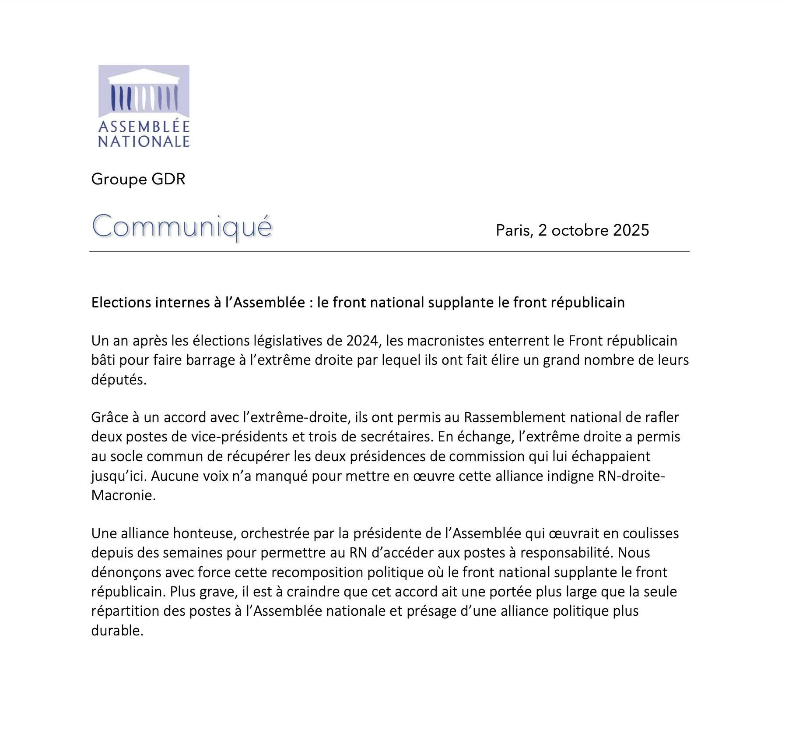

Communiqué parlementaire relayé
Élections internes à l’Assemblée. Le groupe GDR dénonce un accord avec le RN
Date de mise à jour indiquée par Facebook · 2 octobre 2025
Repères éditoriaux
Le 2 octobre 2025, nous avons relayé le communiqué du groupe GDR sur les élections internes à l’Assemblée nationale. Les députés communistes y dénoncent un accord qui, selon eux, a permis au RN d’obtenir deux vice-présidences et trois postes de secrétaires.
Texte conservé avec la publication
La Macronie toute honte bue. Une alliance déshonorante.

Sources
Archive rouge · source conservée dans l’export Facebook · AR-0002-FB-00996
À lire aussi · Face au budget d’austérité, le PCF propose un pacte d’avenir